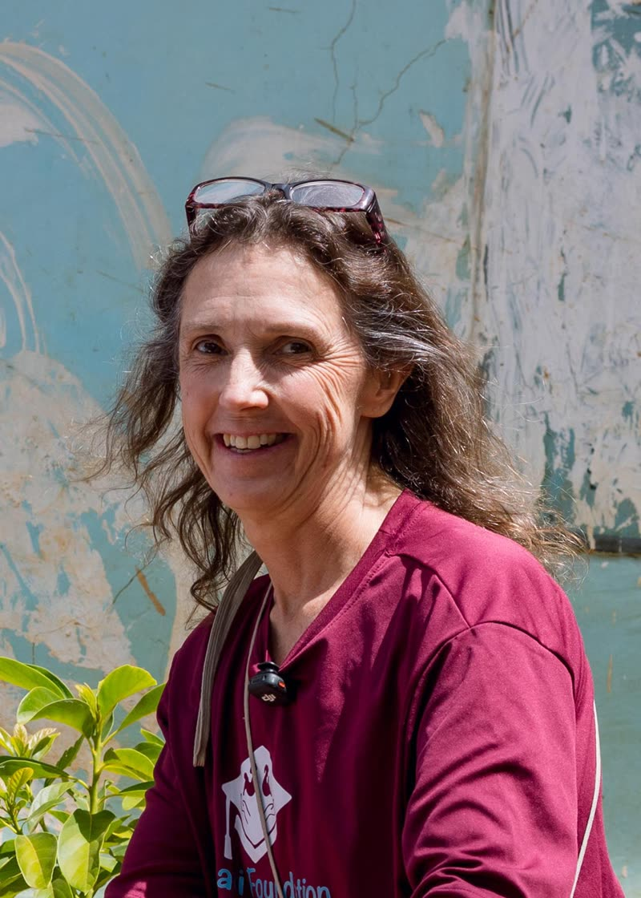

Sara
Main Sponsor, Founder/Organizer
Sara’s journey with Habari Foundation began in 2022 during a family visit to Tanzania arranged through Habari Adventure. Inspired by the vision shared by Stan Wilfred, founder of Habari Adventure and Habari Foundation, Sara and her husband, Brian, became the foundation’s main sponsors in 2023.
Since then, they have remained steadfast partners, making regular visits to Tanzania to monitor the impact of their support on children’s education, well-being, and future opportunities. Their commitment has also contributed to the establishment of Habari Foundation International in the United States, strengthening the foundation’s capacity to empower vulnerable children and create lasting opportunities for a brighter future.